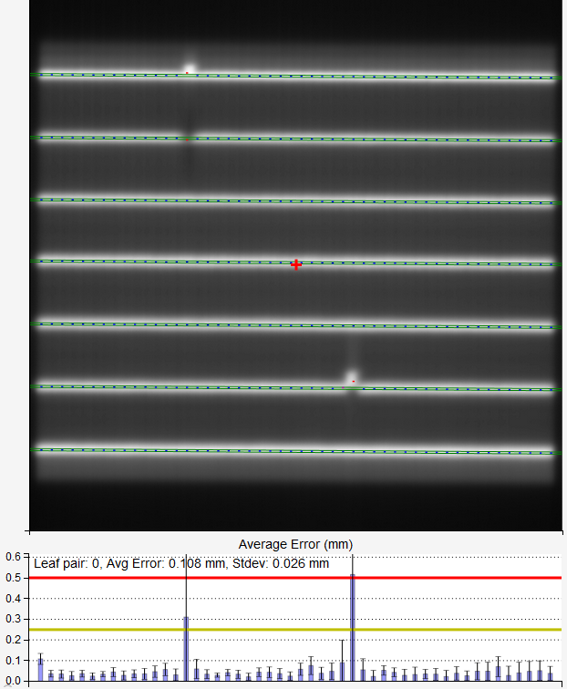
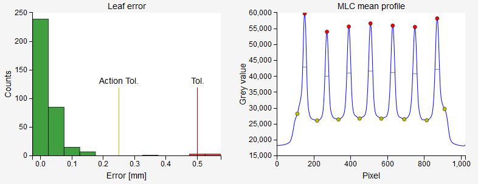

Picket Fence module¶
Warning
Before you start using this module make sure that it is working as you would expect. You should create a dynamic beam that simulates a picket fence with intentional errors, and see if Pylinac/QAserver detects them correctly.
Options¶
- Clip box
Sometimes images have unwanted artifacts at the edges. Here you can enter the size of the central portion of the image beyond which pixel values will be set to background signal. If you don’t want to clip the image, put 0.
- Filter
Apply a median filter to the image. If 0, then no additional filtering is performed. See Pylinac and scipy.ndimage.median_filter for further information.
- Num of pickets
If too many pickets are detected, you can try to force the number of pickets beforehand. If 0, no number is defined. See Pylinac for further information.
- Sag adjust
If 0, no adjustment is made. Otherwise Pylinac will shift the MLCs laterally according to the value that you entered.
- MLC type
Select the appropriate MLC type. Elekta_80, Elekta_160 and Varian_80 are available if QAserver has been configured to use a modified Pylinac module, otherwise only Varian_120 and Varian_120HD will be available. See the configuration instructions.
Warning
If QAserver has been configured to work with Elekta_80, Elekta_160 and Varian_80 MLCs, then a modified Pylinac module will be used for analysis. This may give unexpected results. Use it at your own peril. You can test whether you are using the unmodified Pylinac module by trying to run the analysis with, say, Elekta_160 MLCs.
- Orientation
If you have problems with the orientation of the pickets, you can force the orientation here.
- Invert image?
Check this box if you wish to invert the image.
- Load machine log
Not available in this version.
Results¶
- Image
Each picket is delimited with two green lines. The spacing between the lines corresponds to the tolerance level.
Within the lines dashes correspond to the center (fwhm) of the region formed by the MLC pairs. If the leaf pair has passed the tolerance, the dash will be colored blue. If the leaf pair has passed the tolerance, but not the action tolerance, the dash will be colored purple. If the leaf pair is not within tolerance, the dash will be colored red.
The error histogram shows the error and std of each leaf pair averaged over all the pickets. If you hover over the bars, additional information will be shown. The yellow line is the action tolerance, the red line is the tolerance.
The red cross on the image represents the image center.
- Results
- Nr of picket
How many pickets were detected.
- Pass prcnt
Passing percentage.
- Max error
Maximum deviation of leaf pair fwhm that was detected.
- Max error picket
Which picket line has the max error.
- Max error leaf
Which leaf pair has the max error. Leaf pair are enumerated from left to right (or up-down), starting with 0.
- Median error
The median of all errors.
- Mean picket spacing
The average spacing between picket lines.
- Mean FWHM
The average fwhm of all picket lines. Fwhm is evaluated from the mean MLC profile for each peak.
- Offset from CAX
The distance of each picket line from the image center (red cross).
- FWHM
The fwhm of each picket line evaluated from the mean MLC profile.
- Passed
If the max error is within tolerance, the picket will pass the test.
Histogram shows the distribution of errors for all leaf pairs. If there are 7 pickets, each having 50 leaf pairs, then the histogram will have 350 counts altogether.
The MLC mean profile plot demonstrates the peaks for each picket line. Yellow dots signal the start and stop pixels between which peaks and fwhm are calculated. Horizontal dashes represent the fwhm. Because of the rounding effect, dashes may not be exactly horizontal.
Note
The calculation of FWHM is done independently of Pylinac.